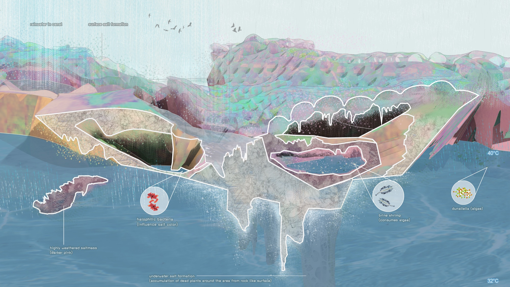
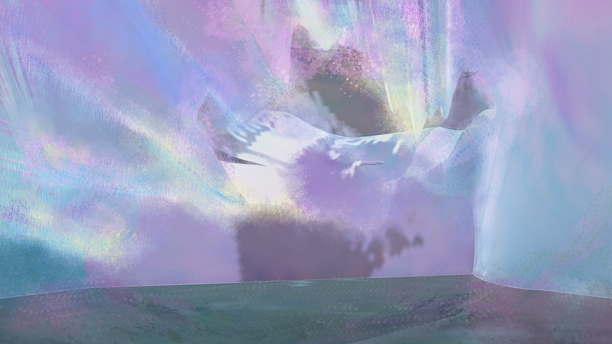

Projects
Halophilic Island
This salt island revolves around the metamorphosis of salt in many stages, from particles in saltwater to crystallization through its interaction with water.
As the salt farm on the original island starts to overflow and expand within the island, saltwater erodes the island's boundary and breaks the landmass's solidity. As salt flurries parasitize the rocks and solids, they form natural patterns by interacting with tides and wind. While heat and wind evaporate salt from water, wind also brings fine salt particles back into the water. The saltwater reacts with oxygen and the sun to transform the landmass into a salt entity. Part of the original island geology remains, working as the foundation for this island.

Salt Accumulation

Accumulation of salt through sea water evaporation: from saltwater to crystallisation, tidal cycles, migrating birds.

Island top view. Saturated colors represent lower salt concentration and high density of halophilic bacteria.

Island bottom view.

Sectional change of salt erosion happening to the island.

Salt cave passage with light and water.

Salt cave with iridescent crystals and diffused light.
Return to Projects